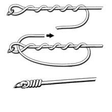
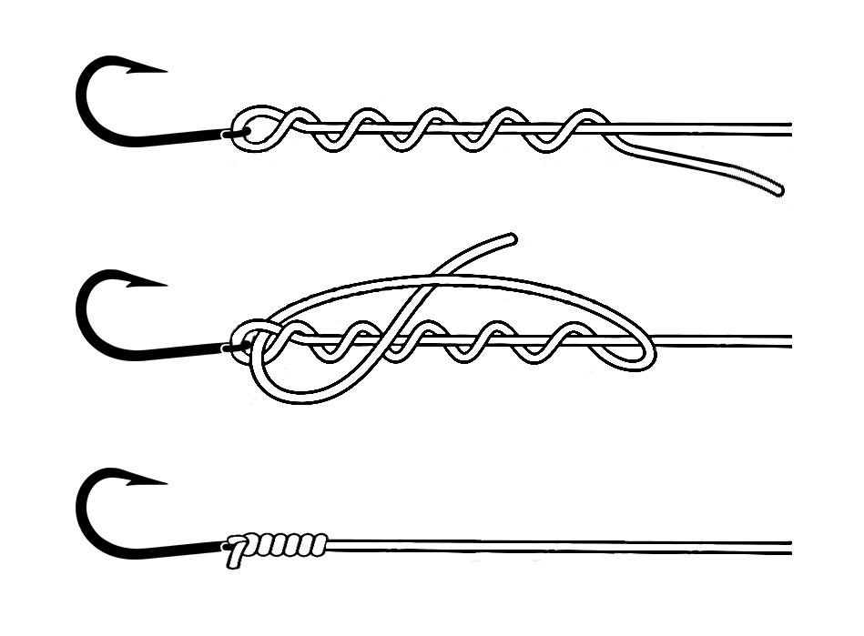
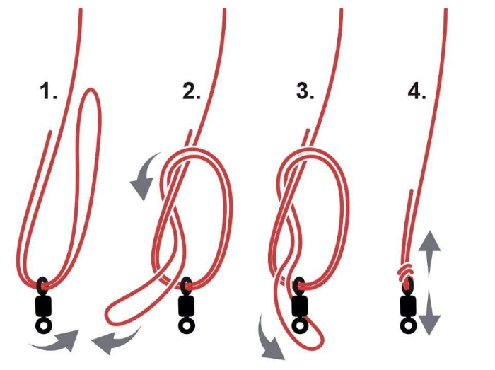

you're knot losing any fish today.
here's a collection of knots you'll surely not ever forget!
clinch knot
- First, guide your line through the eye of the lure. Be sure to pull 3-5 inches of line through.
- Now, begin wrapping that excess line around the main line. BE SURE to leave a hole of space between the eye of the lure and your first wrap. Around six wraps should do the trick.
- After completing the amount of wraps you desire, take the end of your line and feed it through the hole you left in step two.
- Now, pull your line tight.
improved clinch knot
the improved clinch is almost identical to a clinch knot, only differing in the last step.
- Begin by guiding your line through the eye, creating 3-5 inches of excess.
- Next, begin wrapping the excess around the main line. Again, BE SURE to leave a hole of space between the eye of the lure and your first wrap.
- After completing six to eight wraps around the main line, feed the tip of your line into the hole you left in the previous step.
- Now, feed the tip of your line through the pocket you just created.
- Finally, you can pull your line tight. Not too bad right?
palomar knot
palomar knot is strong and simple.
- Begin by doubling up your line, folding it in on itself to create around 6 inches of doubled line.
- Now, feed the doubled line through the eye of the lure.
- Perform an overhand knot, better known as a loop de loop, with the doubled line.
- Finally, pass the lure through the head of the doubled line.
- Now pull 'er tight!